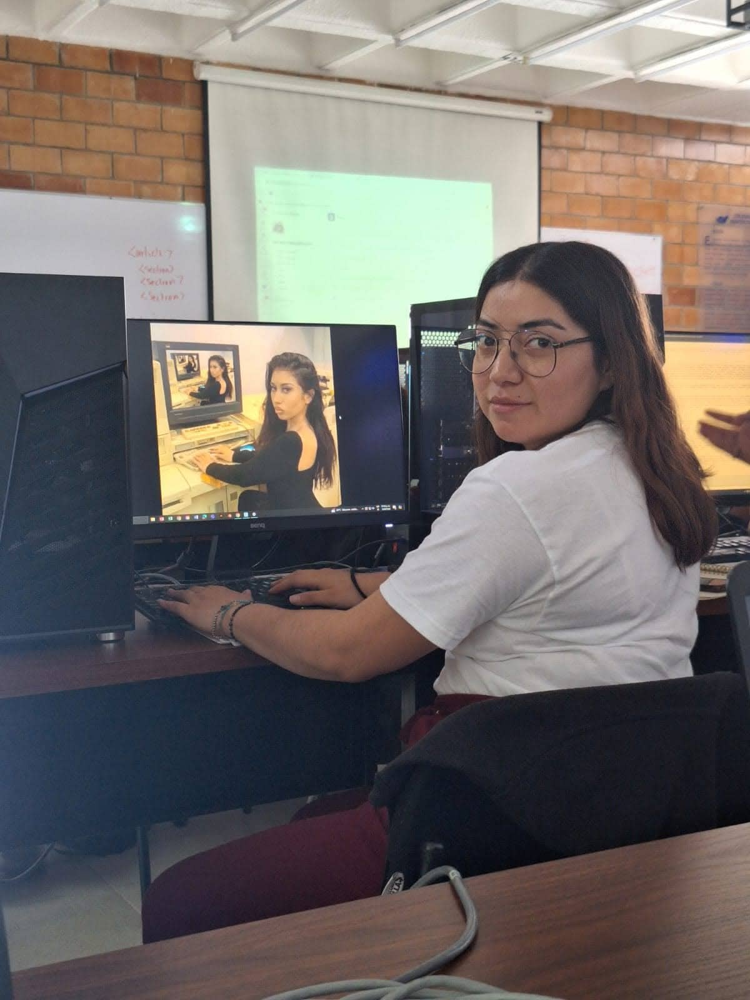
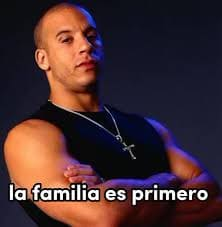

¿Quién soy yo?
Soy Carla Hernández Escobar, una diseñadora gráfica apasionada por el arte y la creatividad en todas sus formas. Mi experiencia abarca desde la ilustración editorial hasta la creación de tipografías, pasando por la fotografía y el diseño de proyectos visuales que combinan lo digital con lo analógico.
Siempre estoy en busca de aprender cosas nuevas que no solo me ayuden a crecer profesionalmente, sino que también me permitan contribuir con ideas frescas e innovadoras en cada proyecto que realizo. Mi creatividad se fusiona con una actitud proactiva, lo que me convierte en una colaboradora eficaz y una líder en constante evolución.
Mi familia como Toreto
El arte siempre ha sido una constante en mi vida, y gran parte de ello se lo debo a mis padres. Desde pequeña, me motivaron a explorar diferentes formas de expresión artística, desde la danza hasta la pintura y el teatro. Este apoyo incondicional ha sido clave en mi desarrollo como ilustradora.
Mi madre, quien es originaria de Orizaba, Veracruz, ha sido una inspiración constante. Ella me enseñó a bailar y, hasta la actualidad, sigue siendo un pilar fundamental en mi vida. Su presencia es tan fuerte que incluso hoy, en mi etapa universitaria, me ayuda a organizar mis tareas y proyectos. La disciplina y pasión que me inculcó se reflejan en cada trazo de mi trabajo.
Por otro lado, mi padre, cuya familia es de Oaxaca, me abrió las puertas al mundo del dibujo. Durante mi infancia, me inscribía en cursos de verano donde aprendí a canalizar mi creatividad y mejorar mis habilidades técnicas. Estas experiencias tempranas no solo moldearon mi amor por el arte, sino que también fortalecieron la conexión entre mi vida familiar y mi pasión por crear.
Aunque nací y crecí en Puebla, las raíces de mi familia, tanto veracruzanas como oaxaqueñas, han influido en mi perspectiva del mundo y en mi estilo artístico. Los colores, las tradiciones y la riqueza cultural de mis padres se entrelazan en mi trabajo, inspirándome a contar historias a través de la ilustración y la tipografía.
Mi relación con ellos sigue siendo una de las principales fuentes de inspiración para mis proyectos, ya que siempre me han enseñado a ver la belleza en lo cotidiano y a explorar nuevas formas de expresión artística.
Mis materias favoritas
Ilustración
Para mí, la ilustración es mucho más que una técnica; es un medio para contar historias, transmitir emociones y conectar con las personas de una manera directa y visual. Me encanta explorar diferentes estilos y técnicas, desde lo digital hasta lo analógico, siempre buscando un enfoque original y personal. Crear personajes y escenarios que combinen lo retro y lo moderno es parte de mi firma, aportando un toque único a cada proyecto en el que trabajo.
Rótulos
La tipografía es otro aspecto clave de mi trabajo. A través del diseño de rótulos, no solo comunico palabras, sino que les doy una personalidad propia. Disfruto el proceso de experimentar con formas, trazos y estilos para lograr letras que no solo se vean bien, sino que también comuniquen de manera efectiva el mensaje que se desea transmitir. Los rótulos permiten fusionar el arte con la función, y me encanta ser parte de esa interacción.
Fotografía
La fotografía, por otro lado, me permite capturar momentos únicos desde una perspectiva personal. Me especializo en fotografía social, gastronómica y de producto, siempre buscando resaltar la esencia de cada sujeto o escena. A través de la lente, puedo congelar instantes que transmiten historias y emociones, algo que disfruto tanto como los demás aspectos de mi trabajo.